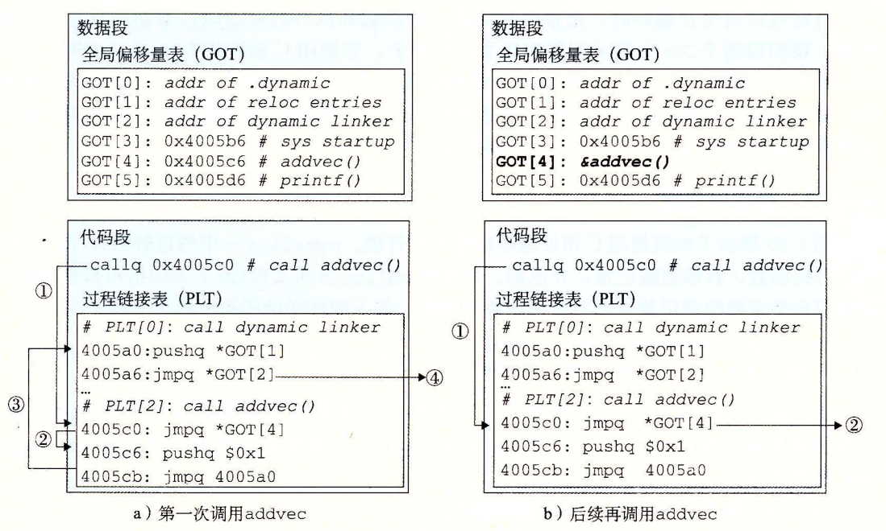

7.12 位置无关代码
共享库的一个主要目的就是允许多个正在运行的进程共享内存中相同的库代码，因而节约宝贵的内存资源。那么，多个进程是如何共享程序的一个副本的呢？一种方法是给每个共享库分配一个事先预备的专用的地址空间片，然后要求加载器总是在这个地址加载共享库。虽然这种方法很简单，但是它也造成了一些严重的问题。它对地址空间的使用效率不高，因为即使一个进程不使用这个库，那部分空间还是会被分配出来。它也难以管理。我们必须保证没有片会重叠。每次当一个库修改了之后，我们必须确认已分配给它的片还适合它的大小。如果不适合了，必须找一个新的片。并且，如果创建了一个新的库，我们还必须为它寻找空间。随着时间的进展，假设在一个系统中有了成百个库和库的各个版本库，就很难避免地址空间分裂成大量小的、未使用而又不再能使用的小洞。更糟的是，对每个系统而言，库在内存中的分配都是不同的，这就引起了更多令人头痛的管理问题。
要避免这些问题，现代系统以这样一种方式编译共享模块的代码段，使得可以把它们加载到内存的任何位置而无需链接器修改。使用这种方法，无限多个进程可以共享一个共享模块的代码段的单一副本。（当然，每个进程仍然会有它自己的读/写数据块。）
可以加载而无需重定位的代码称为位置无关代码（Position-Independent Code，PIC）。用户对 GCC 使用 -fpic 选项指示 GNU 编译系统生成 PIC 代码。共享库的编译必须总是使用该选项。
在一个 x86-64 系统中，对同一个目标模块中符号的引用是不需要特殊处理使之成为 PIC。可以用 PC 相对寻址来编译这些引用，构造目标文件时由静态链接器重定位。然而，对共享模块定义的外部过程和对全局变量的引用需要一些特殊的技巧，接下来我们会谈到。
1. PIC 数据引用
编译器通过运用以下这个有趣的事实来生成对全局变量的 PIC 引用：无论我们在内存中的何处加载一个目标模块（包括共享目标模块），数据段与代码段的距离总是保持不变。因此，代码段中任何指令和数据段中任何变量之间的距离都是一个运行时常量，与代码段和数据段的绝对内存位置是无关的。
想要生成对全局变量 PIC 引用的编译器利用了这个事实，它在数据段开始的地方创建了一个表，叫做全局偏移量表（Global Offset Table，GOT）。在 GOT 中，每个被这个目标模块引用的全局数据目标（过程或全局变量）都有一个 8 字节条目。编译器还为 GOT 中每个条目生成一个重定位记录。在加载时，动态链接器会重定位 GOT 中的每个条目，使得它包含目标的正确的绝对地址。每个引用全局目标的目标模块都有自己的 GOT。
图 7-18 展示了示例 libvector.so 共享模块的 GOT。addvec 例程通过 GOT[3] 间接地加载全局变量 addcnt 的地址，然后把 addcnt 在内存中加 1。这里的关键思想是对 GOTQ[3] 的 PC 相对引用中的偏移量是一个运行时常量。

图 7-18 用 GOT 引用全局变量。libvector.so 中的 addvec 例程通过 libvector.so 的 GOT 间接引用了 addcnt
因为 addcnt 是由 libvector.so 模块定义的，编译器可以利用代码段和数据段之间不变的距离，产生对 addcnt 的直接 PC 相对引用，并增加一个重定位，让链接器在构造这个共享模块时解析它。不过，如果 addcnt 是由另一个共享模块定义的，那么就需要通过 GOT 进行间接访问。在这里，编译器选择采用最通用的解决方案，为所有的引用使用 GOT。
2.PIC 函数调用
假设程序调用一个由共享库定义的函数。编译器没有办法预测这个函数的运行时地址，因为定义它的共享模块在运行时可以加载到任意位置。正常的方法是为该引用生成一条重定位记录，然后动态链接器在程序加载的时候再解析它。不过，这种方法并不是 PIC，因为它需要链接器修改调用模块的代码段，GNU 编译系统使用了一种很有趣的技术来解决这个问题，称为延迟绑定（lazy binding），将过程地址的绑定推迟到第一次调用该过程时。
使用延迟绑定的动机是对于一个像 libc.so 这样的共享库输出的成百上千个函数中，一个典型的应用程序只会使用其中很少的一部分。把函数地址的解析推迟到它实际被调用的地方，能避免动态链接器在加载时进行成百上千个其实并不需要的重定位。第一次调用过程的运行时开销很大，但是其后的每次调用都只会花费一条指令和一个间接的内存引用。
延迟绑定是通过两个数据结构之间简洁但又有些复杂的交互来实现的，这两个数据结构是：GOT 和过程链接表（Procedure Linkage Table，PLT）。如果一个目标模块调用定义在共享库中的任何函数，那么它就有自己的 GOT 和 PLT。GOT 是数据段的一部分，而 PLT 是代码段的一部分。
图 7-19 展示的是 PLT 和 GOT 如何协作在运行时解析函数的地址。首先，让我们检查一下这两个表的内容。
- 过程链接表（PLT）。PLT 是一个数组，其中每个条目是 16 字节代码。PLT[0] 是一个特殊条目，它跳转到动态链接器中。每个被可执行程序调用的库函数都有它自己的 PLT 条目。每个条目都负责调用一个具体的函数。PLT[1]（图中未显示）调用系统启动函数（__libc_start_main），它初始化执行环境，调用 main 函数并处理其返回值从 PLT[2] 开始的条目调用用户代码调用的函数。在我们的例子中，PLT[2] 调用 addvec，PLT[3]（图中未显示）调用 printf。
- 全局偏移量表（GOT）。正如我们看到的，GOT 是一个数组，其中每个条目是 8 字节地址。和 PLT 联合使用时，GOTfO] 和 GOT[1] 包含动态链接器在解析函数地址时会使用的信息。GOT[2] 是动态链接器在 ld-linux.so 模块中的入口点。其余的每个条目对应于一个被调用的函数，其地址需要在运行时被解析。每个条目都有一个相匹配的 PLT 条目。例如，GOT[4] 和 PLT[2] 对应于 addvec。初始时，每个 GOT 条目都指向对应 PLT 条目的第二条指令。

图 7-19 用 PLT 和 GOT 调用外部函数。在第一次调用 addvec 时，动态链接器解析它的地址
图 7-19a 展示了 GOT 和 PLT 如何协同工作，在 addvec 被第一次调用时，延迟解析它的运行时地址：
- 第 1 步。不直接调用 addvec，程序调用进入 PLT[2]，这是 addvec 的 PLT 条目。
- 第 2 步。第一条 PLT 指令通过 GOT[4] 进行间接跳转。因为每个 GOT 条目初始时都指向它对应的 PLT 条目的第二条指令，这个间接跳转只是简单地把控制传送回 PLT[2] 中的下一条指令。
- 第 3 步。在把 addvec 的 ID（0x1）压入栈中之后，PLT[2] 跳转到 PLT[0]。
- 第 4 步。PLT[0] 通过 GOT[1] 间接地把动态链接器的一个参数压入栈中，然后通过 GOT[2] 间接跳转进动态链接器中。动态链接器使用两个栈条目来确定 addvec 的运行时位置，用这个地址重写 GOT[4]，再把控制传递给 addvec。
图 7-19b 给出的是后续再调用 addvec 时的控制流：
- 第 1 步。和前面一样，控制传递到 PLT[2]。
- 第 2 步。不过这次通过 GOT[4] 的间接跳转会将控制直接转移到 addvec。